Bienvenidxs
al MUTEX
El Museo Textil de Antigua abrirá sus puertas en el último trimestre del 2026
El Mutex será un lugar para aprender a ver las artes textiles de los pueblos indígenas de Guatemala como parte integral de sus sistemas de conocimiento.


Una mirada
diferente
La belleza está en
el significado
En el Mutex encontrarás exposiciones, talleres prácticos y experiencias multisensoriales para todas las edades, pensadas para que visitantes y viajeros de todo el mundo descubran y aprendan a decodificar la riqueza técnica, simbólica e histórica tejida en cada hilo, color y patrón de las artes textiles de los pueblos indígenas de Guatemala.
De la mano de
las comunidades
portadoras
Nos esforzamos por contar
historias completas
Las artes textiles guatemaltecas habitan un mundo complejo, que queremos comunicar y hacer visible: las técnicas y saberes antiguos conviven con las innovaciones más recientes; la belleza de los textiles no se traduce en una valoración económica justa; la tradición va acompañada de la transformación.